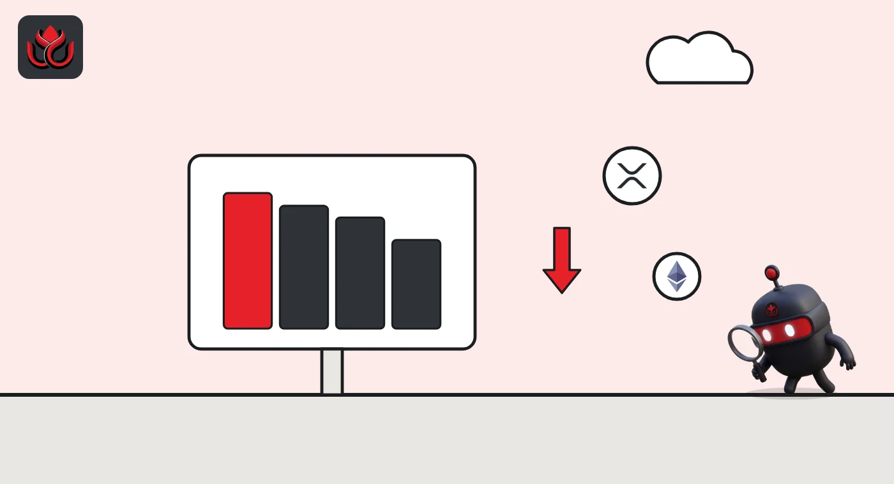

Bitcoin lost $4,400 in four hours. Why did ETH and XRP fall even harder?
Bitcoin slid from about $80,300 to under $76,000 on November 5, most of it between 9 a.m. and 11 a.m. ET. Ether, Solana and XRP dropped 7% to 9%, and the whole crypto market shed about 8% in a day.
Key points
- Bitcoin traded at about $80,332 at 7 a.m. ET on November 5 and $75,960 at 11 a.m. ET, a drop of 5.4% in four hours, hourly CoinGecko data show.
- By 12:37 a.m. ET on November 6, ETH was down 8.1% from that 7 a.m. level, XRP 9.0% and SOL 7.4%. BTC was down 6.0%, at $75,534.
- CoinGecko put the total crypto market at $2.56 trillion, down 7.95% in 24 hours.
What happened
The selling started on the morning of November 5, US time. Bitcoin had spent the night above $80,000. CoinGecko's hourly price data show it at about $80,332 at 7 a.m. ET, then $79,600 at 9 a.m., $78,172 at 10 a.m. and $75,960 at 11 a.m.
The single worst hour was 10 a.m. to 11 a.m. ET, when bitcoin lost about 2.8%. After that the price went sideways between roughly $75,800 and $76,300 for the rest of the day. It did not bounce. At 12:37 a.m. ET on November 6 it was at $75,534, the lowest point in CoinGecko's two-day hourly series and 6.0% below the 7 a.m. level. A later CoinGecko reading, at 1:01 a.m. ET, was about $75,549, so the price was still holding near that floor.
For context, the highest hourly reading in that two-day window was $80,669 at 6 p.m. ET on November 4. So the whole drop from top to bottom was a little over $5,100.
Timeline
Bitcoin at about $80,669, the high of the two-day window
BTC about $80,332, ETH $2,419, SOL $96.43, XRP $1.318
BTC down to about $78,172
BTC about $75,960, ETH $2,250, SOL $90.04, XRP $1.245
BTC $75,534, ETH $2,222.89, SOL $89.28, XRP $1.1996

The big coins fell harder than bitcoin
Bitcoin was not the worst performer. Measured from 7 a.m. ET on November 5 to 12:37 a.m. ET on November 6, using CoinGecko's hourly prices:
- Ether (ETH): from about $2,419 to $2,222.89, minus 8.1%
- XRP: from about $1.318 to $1.1996, minus 9.0%
- Solana (SOL): from about $96.43 to $89.28, minus 7.4%. SOL touched $88.96 at 1 p.m. ET.
- Bitcoin: from about $80,332 to $75,534, minus 6.0%
Unlike bitcoin, ETH and XRP kept sliding into the evening. XRP was at $1.245 at 11 a.m. ET and lost another 3.6% by just after midnight.
Drop from 7 a.m. ET November 5 to 12:37 a.m. ET November 6
%
Hourly prices. Source: CoinGecko API market_chart, fetched November 6, 2026, 12:38 a.m. ET.
The whole market
CoinGecko's global data put the total value of all tracked crypto assets at about $2.56 trillion early on November 6, down 7.95% in 24 hours. Its 24-hour figures for the four big coins at 12:38 a.m. ET were: BTC minus 6.2%, ETH minus 8.3%, SOL minus 7.0% and XRP minus 8.4%.
The price data show the size and timing of the drop. They do not show who sold or why.
What we left out
We did not find a primary, on-chain source for a total of liquidations (forced closures of borrowed trading positions) across exchanges, so this story gives no liquidation figure. We also do not cite stock market numbers here, because we report only figures we could check on a primary source.
LC Insight analysis
This section is our reading of the facts above, not a statement of fact.
- We think the timing matters most: almost the entire bitcoin move came in two hours on a US weekday morning, and the price then held flat instead of rebounding. That looks more like steady selling than a single panic wick.
- The weaker showing of ETH, XRP and SOL fits a market where traders are cutting risk across the board, not reacting to news about one coin.
- The likely next test is whether bitcoin holds the $75,500 area seen after midnight. This is an observation about price levels, not a trading call.
What's next
- Whether BTC holds about $75,500 or makes a new low
- Whether ETH and XRP keep falling faster than bitcoin
- CoinGecko's total market value against $2.56 trillion
Disclaimer. This article is based on public information and the sources listed below as of the update time shown. It is for information only and is not investment, legal or tax advice. Figures may change as companies and authorities publish new data.
Sources
- CoinGecko, Bitcoin price and API market_chart, 2 days hourly (fetched November 6, 2026, 12:38 a.m. ET)
- CoinGecko, Ethereum price (fetched November 6, 2026, 12:38 a.m. ET)
- CoinGecko, Solana price (fetched November 6, 2026, 12:38 a.m. ET)
- CoinGecko, XRP price (fetched November 6, 2026, 12:38 a.m. ET)
- CoinGecko, Global crypto market cap (fetched November 6, 2026, 12:38 a.m. ET)